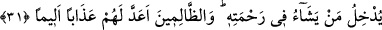

SABAH AKŞAM
RABBİNİN İSMİNİ YÂDET
23. (Rasûlüm!) Kur’an’ı sana biz, evet biz indirdik.
24. Artık Rabbinin hükmüne (boyun eğip) sabret; onlardan hiçbir günahkâra,
yahut hiçbir nanköre boyun eğme.
25. Sabah akşam Rabbinin ismini yâdet.
26. Gecenin bir kısmında O’na secde et; gecenin uzun bir bölümünde de O’nu
tesbih et.
27. Şu insanlar, çarçabuk geçen dünyayı seviyorlar da önlerindeki çetin bir günü
(âhireti) ihmal ediyorlar.
28. Onları biz yarattık; onların yaratılışını sapasağlam yaptık. Dilediğimizde
(kendilerini yok eder) yerlerine benzerlerini getiririz.
29. Şüphesiz ki bu bir öğüttür. Artık dileyen Rabbine bir yol tutar.
30. Sizler ancak Rabbinizin dilemesi (izin vermesi) sâyesinde (bir şeyi)
dileyebilirsiniz. Şüphesiz Allah her şeyi bilendir, hikmet sâhibidir.
31. O, dilediğini rahmetine dâhil eder. Zâlimlere gelince, onlar için elem verici bir
azap hazırlamıştır.
23) (Rasûlüm!) Kur’an’ı sana biz, evet biz indirdik.
Şüphesiz Kur’an’ı sana öyle olmasını gerektiren önemli ve büyük hikmetlere
dayanarak parça parça, bölüm bölüm başkası değil, ancak ve ancak “biz indirdik.”
Buradaki vurguyu ve Kur’an’ın sâdece Allah tarafından indirildiğini pekiştirme
biçiminde ifâde eden unsurlar zamirlerin ardarda tekrar edilmesidir. Allah Teâlâ burada
sanki şöyle buyuruyor: “Şu kâfirler Kur’an’ın bir kehanet eseri olduğunu ve sihirden
ibâret bulunduğunu söylüyorlar. Ben hak ve gerçek otoriteyim. Ben pekiştirerek ve